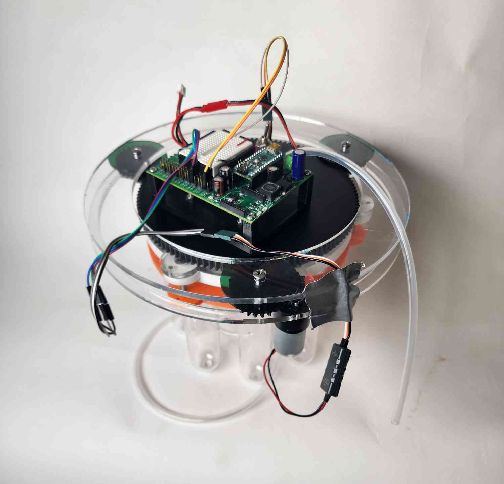
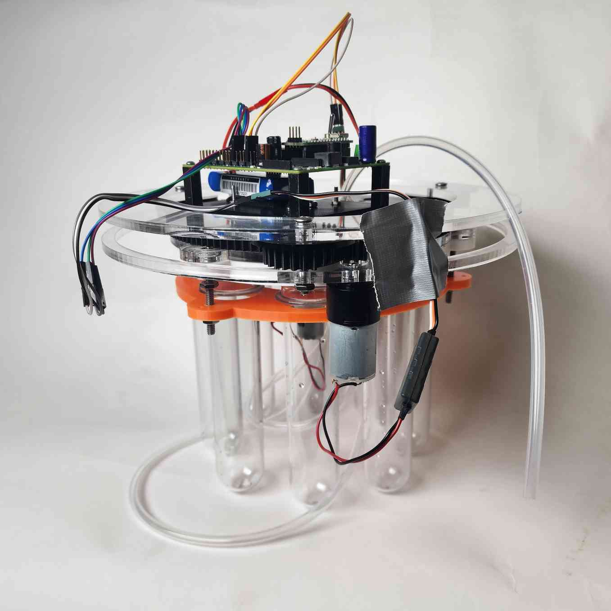
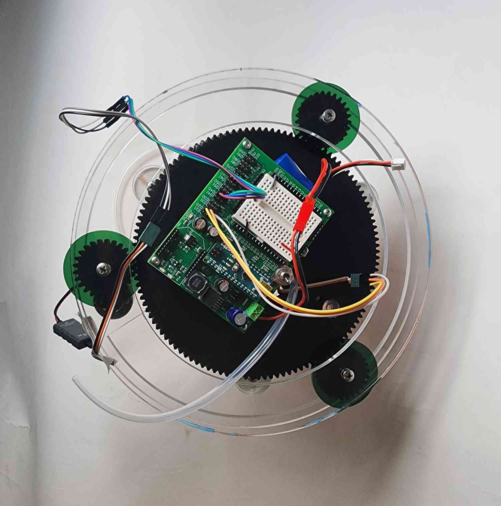

Proof of concept part of the class 2.00A (Designing for the Future: Earth, Sea, and Space). Aim of design
was to optimize water collection for marine research. Worked with other students to design a
modular system with detachable test tubes and a peristaltic pump that turns and dispenses water from
flexible tube. I was largely in charge of laser cutting, CAD-ing, and 3D-printing parts.



Finished ProjectCADs for Laser-Cut Acrylic Base (Left) and Gear-Bearing System (Right)
Ladder Climbing Robot
Timeline: March-May 2023
Part of project by MIT Robotics Team for a showcase. Primarily in charge of designing and building the
sliding hooks that snap onto ladder rungs with assistance of rubber bands.
CAD of my Hook Assembly Design and Team's Assembly
Sensory Steam Roller (in progress)
Timeline: January 2024-Present
Passion project that I will build with my friends for my dorm, Random Hall. I'm in charge of designing,
CAD-ing, and machining for the most part.